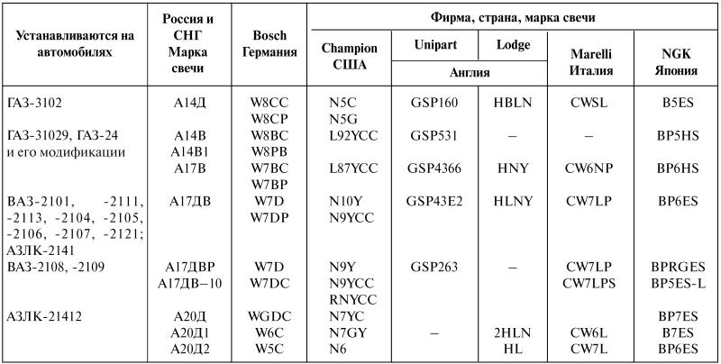
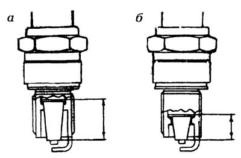

Свечи зажигания
Сколько служит свеча, каков ее ресурс, то есть период 100-процентной надежности?
Надежная свеча, от которой зависит эффективность поджигания рабочей смеси в цилиндрах двигателя, может эксплуатироваться долго, если периодически очищать ее электроды от нагара, регулировать и подгибать боковой электрод до его утонения (выгорания), после чего уже требуется замена свечи новой. Хорошая свеча дает реальные преимущества при пуске двигателя.
Устанавливаемые на автомобиль свечи должны строго соответствовать типу, указанному в инструкции к автомобилю.
Вначале скажем об условных обозначениях отечественных свечей зажигания. Но прежде сделаем небольшое, но важное предупреждение.
В маркировке, состоящей из набора условных обозначений, содержится полная характеристика свечи. Рассмотрим, к примеру, маркировку свечи А17 ДВР.
Первая буква «А» соответствует диаметру и шагу резьбы М14х1,25.
Цифры после первой буквы представляют собой так называемое калильное число свечи. В нашем случае эта цифра 17. Более подробно о калильном числе см. ниже.
Следующая буква в маркировке «Д» означает длину резьбовой части, равную 19 мм. Если в обозначении свечи буква «Д» отсутствует, то это значит, что длина резьбы равна 12 мм.
Буква «В» (если она есть в обозначении) указывает на то, что тепловой конус (конец изолятора) выступает за торец корпуса. Отсутствие этой буквы означает, что изолятор утоплен в корпус.
Буква «Р» указывает на то, что в центральном электроде свечи имеется резистор для подавления радиопомех.
Замыкать маркировку может появившаяся сейчас в качестве новшества буква «М»: центральный электрод выполнен из меди, а его выступающий кончик защищен никелем.
В обозначении могут быть и цифры, указывающие на некоторые особенности конструкции свечей, например, на наличие в ней более долговечных электродов.
На двигателях некоторых моделей автомобилей наряду с отечественными могут использоваться импортные свечи «Бош», «Чемпион» и другие с хорошими пусковыми свойствами и самоочищающейся юбкой изолятора. У таких свечей значительно расширен температурный диапазон, поэтому их называют всесезонными или широкодиапазонными. Импортные свечи имеют свою маркировку, отличную от принятой у нас. Поэтому мы приводим сравнительную таблицу маркировок, которую предлагаем в качестве пособия при замене отечественных свечей зарубежными (табл. 4).
Таблица 4. Прослушивание работы двигателя стетоскопом или с помощью деревянной палки
Примечание. Устанавливать зазор на зарубежных свечах такой же, как и на отечественных, по инструкции для данного автомобиля.
От качества свечей зажигания зависят надежность, успешный пуск, мощность, тепловая экономичность двигателя, а также степень токсичности отработавших газов.
Калильное число определяет тепловую характеристику свечей. Свечи бывают «холодные» и «горячие». Подбор свечей по калильному числу должен соответствовать «характеру» и поведению двигателя. Чем длиннее тепловой конус, тем больше тепла он получает и тем горячее свеча. Чем больше этого тепла отводится (чем короче тепловой конус), тем выше калильное число. Так, калильное число «8» обозначает наиболее горячую свечу, предельно «холодная» свеча соответствует цифре «26» (рис. 1).

Рис. 1. Калильное число: а – свеча «горячая»; б – свеча «холодная».
Слишком «холодная» свеча покрывается нагаром, и искрообразование прекращается. Слишком «горячая» свеча приводит к калильному зажиганию, при котором воспламенение рабочей смеси происходит от перегрева свечи еще до момента появления искры. Такое самовоспламенение несгоревшей смеси сопровождается стуками и снижением мощности двигателя, если он длительно работает с максимальной мощностью. Сгорание происходит неравномерно, возникает взрывное сгорание, в результате которого в камере образуются высокие неравномерные давления и предельно высокие температуры. Это явление называется детонацией.
Стойкость к детонации – свойство предотвращать самовоспламенение смеси – достигается применением менее «горячей» свечи, нужного октанового числа бензина, а также регулировкой воздушно-топливной смеси, когда она возгорается в нужный момент от искры свечи зажигания.
При профилактическом осмотре перед установкой свечей необходимо проверить величину искрового зазора. Щуп должен проходить между электродами с едва ощутимым сопротивлением. Искровой зазор слишком велик – пропуски искрообразования. Искровой зазор слишком мал – перерывы в процессе воспламенения (в обоих случаях увеличивается расход топлива).
Длина резьбы свечи должна соответствовать длине резьбы в головке блока цилиндров. Установите свечу с уплотнительным кольцом. Электроды свечей, поверхность теплового конуса, верхнюю часть изолятора очистите от нагара и загрязнений. Плотный нагар без явных дефектов – обгоревших электродов, трещин изолятора – можно очистить ацетоном, положив в него на 30 мин юбку изолятора. Размягченный нагар удаляют жесткой кисточкой. В полость свечи надо несколько раз капать серную или соляную кислоту и перемешать содержимое полости кисточкой. Затем свечу промывают водой, просушивают и ставят на машину. Свеча с сильно изношенными электродами подлежит замене. Резьбу свечи перед установкой не следует покрывать никаким смазочным материалом. Заворачивают свечи сначала вручную, а затем затягивают свечным ключом (при резьбе M14х1,25) моментом 2–3 кгс?м. После чего проверяют исправность систем охлаждения, смазки и устанавливают угол опережения зажигания.
Гарантийный срок работоспособности свечи – 30 тыс. км пробега. При хорошем уходе и правильной регулировке систем автомобиля свечи могут отработать два гарантийных срока.
В холодное время года рекомендуется заменить достаточно поработавшие свечи новыми, более «горячими». Такие свечи избавляют от долгих попыток пуска при низких температурах. Для автомобиля ГАЗ-24, например, вместо свечей А17В целесообразно поставить свечи «погорячее» – А14В, улучшающие искрообразование и облегчающие пуск двигателя, но при этом надо следить, чтобы в цилиндрах не появлялось калильное зажигание, чтобы при выключении зажигания двигатель не продолжал работать. В случае появления калильного зажигания следует изменить угол поворота коленчатого вала, уменьшая на 1–2° угол опережения зажигания, или установить его в нормальное положение, исключив возможность самовоспламенения в камере сгорания двигателя.
Проверять состояние свечей зажигания рекомендуется через каждые 10 тыс. км пробега автомобиля. Осмотр свечей, снятых с двигателя, позволяет оценить его состояние. По вывернутой из головки блока свече, при внимательном внешнем осмотре ее, можно судить о состоянии двигателя, его цилиндропоршневой группы, систем зажигания, питания, охлаждения и смазки.
Рассмотрим некоторые случаи.
Тонкий слой налета светло-серого или светло-коричневого цвета на свече– двигатель исправен. Свеча соответствует двигателю по тепловой характеристике. Юбочка изолятора нагревается до 600 °C. Расход топлива, моторного масла и токсичность отработавших газов в норме, нагар на свече почти полностью отсутствует. Искровой зазор следует регулировать через каждые 10 тыс. км пробега.
Матовая черная копоть – свеча не предназначена для данного двигателя. Ее юбочка нагревается до 400 °C и на ней скапливаются маслянистые отложения, которые, сгорая, оставляют копоть. Значит, нужно подобрать свечу «погорячее» по калильному числу. Если и это не помогает, то, видимо, двигатель работает на богатой смеси, неверно отрегулированы карбюратор и угол опережения зажигания.
Блестящий черный маслянистый нагар – свеча соответствует данному двигателю, но у самого двигателя низкая компрессия и как следствие повышенный расход топлива, затрудненный пуск, неустойчивая работа на холостом ходу. В камеру сгорания поступает излишек масла. Двигатель нуждается в ремонте.
Толстый слой рыхлых отложений – свеча «горячая» для данного двигателя. Бензин или масло не соответствуют ТУ. Перебои в работе двигателя, затрудненный пуск. Требуется замена топлива и масла. При этом систему смазки следует промыть, а систему вентиляции картера прочистить, после чего заменить свечу.
Белый от перегрева нагар, растрескивание теплового конуса изолятора, оплавление или выгорание электродов – слишком «горячая» для данного двигателя свеча. Юбочка изолятора нагревается до 800 °C, а если превышает 900 °C, двигатель начинает работать от калильного зажигания и может быть поврежден. Появляются перебои в его работе. В этом случае нужно выбрать свечу «похолоднее». Проверив исправность системы охлаждения и смазки (и только после этого!), можно устанавливать зажигание.
В заключение – небольшой практический совет. Старайтесь всегда заменять свечи целым комплектом, что дает возможность контролировать состояние двигателя и всех его цилиндров.